WPS Office远程代码执行复现与分析
前言
WPS ofrice是中国金山软件(Kingsoft)公司的一种办公软件提供文件处理功能。近日，网传WPSOrrice for windows 版本存在0day 漏洞，攻击者可以利用该 day 漏洞在受害者主机上执行任意恶意文件；目前已经发现了该0day漏洞的在野利用。大家都在传，我也来水一篇文章了，踩了一些坑，在此记录一下。遇到了大反转，文章后半部分有分析。
漏祠描述
WPS Office for windows的内置浏览器存在逻辑漏涧，攻击者可以利用该漏祠专门构造出恶意文档，受害者打开该文档并点击文档中的URL链接或包含了超级链接的图片时，存在漏润版本的WPS office会通过内嵌浏览器加载该链接，接着该链接中js脚本会通过cefQuery调用WPS端内API下载文件并打开文件，进而导致恶意文件在受害者电脑上被运行。
成功的环境
试了好几个环境，只有这个成功了。但是非常奇怪！！！
1 | wps 11.1.0.12300 |
漏洞复现
wps下载地址：https://official-package.wpscdn.cn/wps/download/WPS_Setup_12300.exe
我这里下载的版本是：wps 11.1.0.12300。下载完成之后，直接安装即可。
host添加
1 | 127.0.0.1 clientweb.docer.wps.cn.cloudwps.cn |
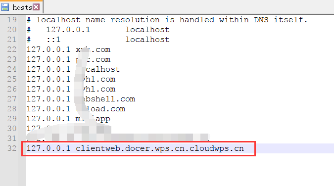
用python起一个web服务，在
1 | python -m http.server 80 |
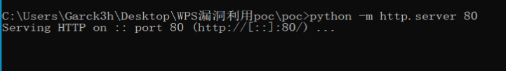
然后双击POC的poc.docx，成功弹计算器！但是我观察到了一个奇怪的问题，我起的web没有被请求，居然就弹计算器了。
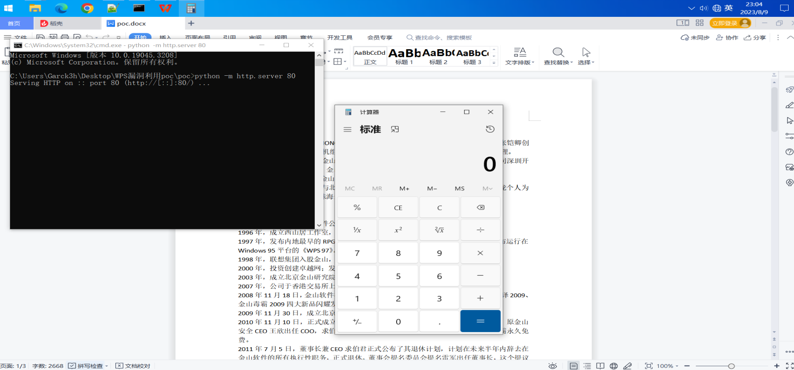
复现视频：
多个测试环境
我测试了以下几个环境
第一个系统
1 | Windows10 专业版 |
第二个系统（也就是我上面成功弹计算器的）
1 | Windows 10 专业版 |
反转
上面提到了我的web没有被访问就弹计算器了，我想一探究竟是什么原因，我解压了压缩包之后看到了，两个可以的文件分别是poc/word/embeddings/Workbook1.xlsx和poc/word/media/image1.png
在poc/word/webExtensions/webExtension1.xml文件中可以看到确实有请求http://clientweb.docer.wps.cn.cloudwps.cn/1.html
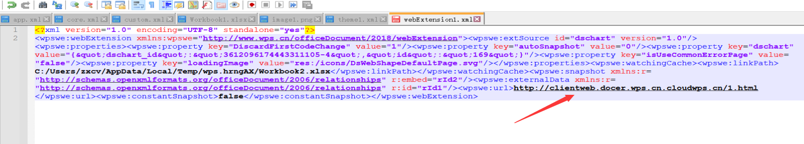
poc/word/media/image1.png文件
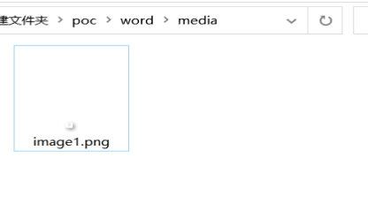
poc/word/embeddings/Workbook1.xlsx文件
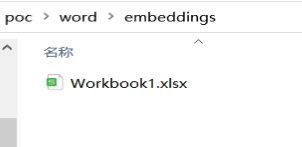
分析Workbook1.xlsx
分析了一圈Workbook1.xlsx，打开看了看宏没找到啥。解压查找可疑文件也未发现可疑文件。
新的docx
于是我创建一个新的qwe.docx文件，把原poc的内容拷贝到我新创建的docx文件中，保存之后打开，发现也弹计算器了。
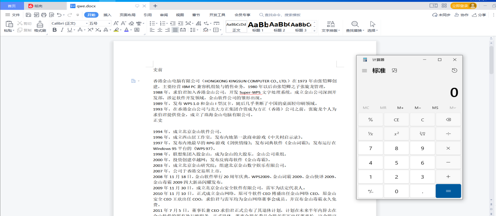
于是便可以锁定弹计算器的问题就在内容上，经过我仔细的摸索，便发现了文章里面藏在一个图片。
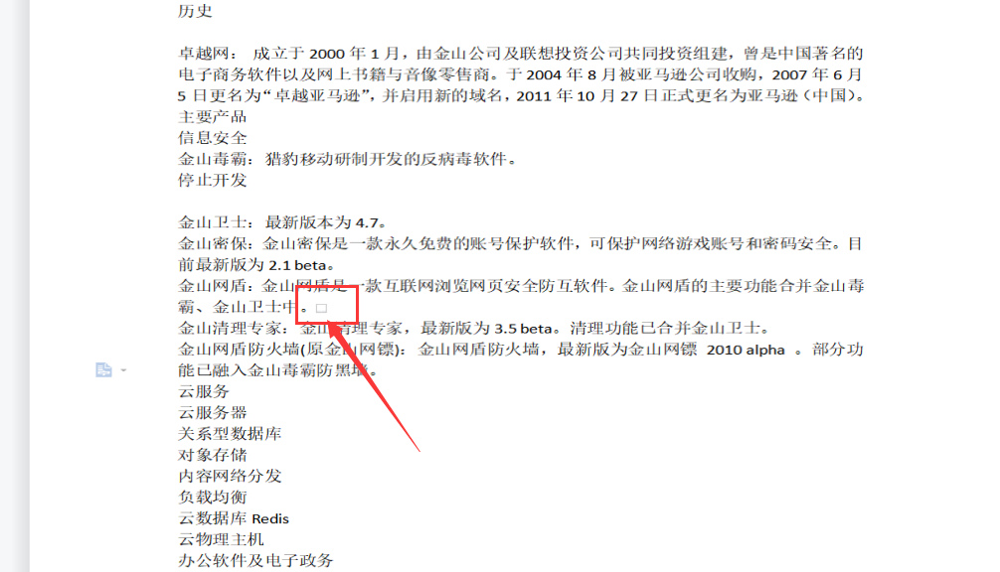
我把图片复制到新的asd.docx文件中也可以实现打开弹计算器。
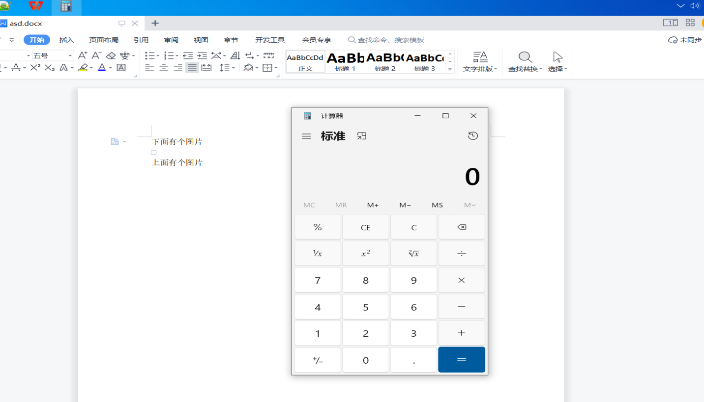
复现视频：
分析隐藏图片
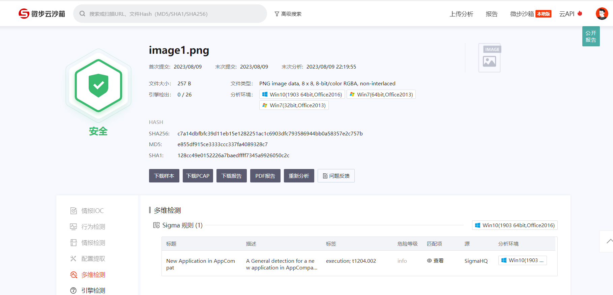
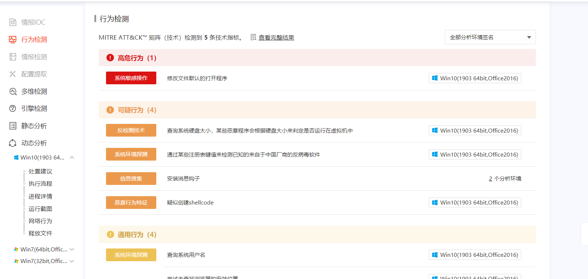
尝试用工具分析无果
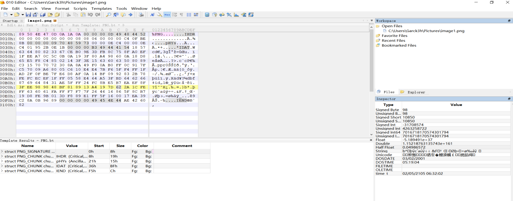
继续分析发现
在不能弹计算器的wps版本中是可以正常请求poc/word/webExtensions/webExtension1.xml中写好了的URL：http://clientweb.docer.wps.cn.cloudwps.cn/1.html
但是在能弹计算机的环境下是没有解析。
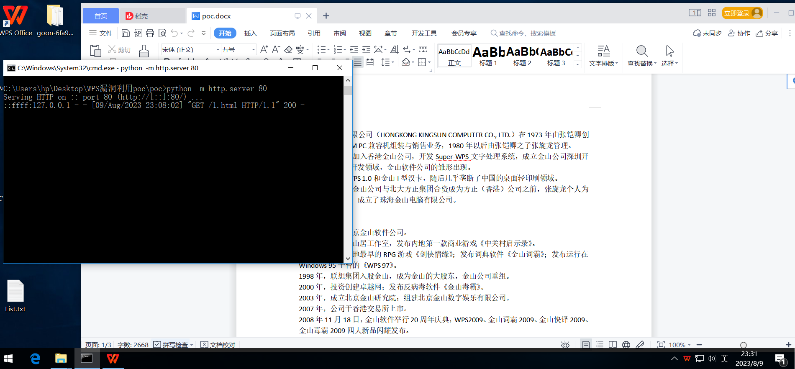
总结
1.网传的poc可以在特定的wps版本中打开后执行图片里面的内容进行弹计算器，但貌似不算是漏洞描述所触发的。
2.多个 WPS 0fFice 2023 个人版<11.1.0.15120 都未复现，poc存在可疑？
3.也有人说这是个老洞，吾爱破解去年有讨论过：https://www.52pojie.cn/thread-1670740-1-1.html